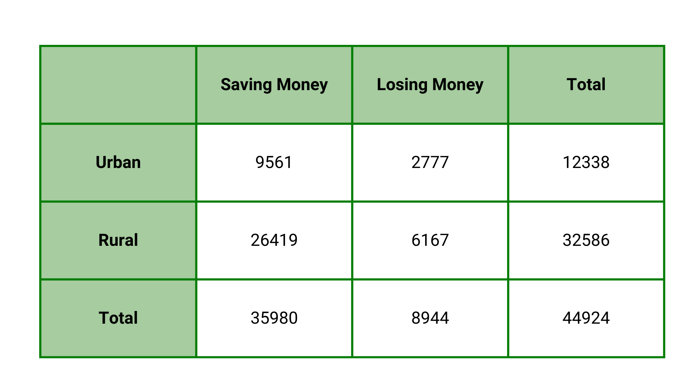

Exploratory Data Analysis

As Population Booms, Poverty Looms: Regional Population and Poverty (2020)
The plot consists of a bar graph depicting the total population per region and a line graph showing the magnitude of poverty per region. The data on the level of urbanization of each region was utilized to classify areas as either urban or rural. As seen in the bar graph, urban regions have a higher overall population. One of the reasons could be due to the influx of individuals moving to cities in search of better employment opportunities. However, urban regions also have a larger number of residents living in poverty. This suggests that for all opportunities urban regions provide, it also comes with major challenges, such as higher cost of living, trapping Filipinos in poverty. On the other hand, rural areas, while having smaller populations, tend to experience less poverty. Overall, this graph shows the need for effective poverty alleviation programs that specifically address the diverse and complex challenges faced in urban and rural settings.
How does poverty alleviation differ between urban and rural areas in the Philippines?

Research Question 1 Visualization
Daily life in the Philippines will be difficult if there is insufficient access to utilities such as electricity and water. Through this graph, we check if there is a difference in the availability of essential amenities between urban and rural areas and find out which area may need more assistance. Using data from the 2022 Annual Poverty Indicators Survey, we discover what percent of households have sufficient access to water, electricity, internet, and public transportation. For water and electricity, we observe that rural and urban areas have high access to such utilities and have little difference between them. For broadband internet, we notice that it is more prevalent in rural households, meaning that there could be a problem with distribution in urban areas and assistance may be needed. For public transportation, the graph suggests that rural areas must give more importance in giving access to public transport in order to close the gap between urban and rural areas in this sector.
Hypothesis Testing
Preprocessing
From the "2021 Family Income and Expenditure Survey" of the Philippines Statistics Authority, we isolated three columns: URB, TOINC, and TOTEX. URB is whether the household surveyed is in an urban (1) or rural (2) area. TOINC is the total income (in pesos) of the household in 2021, and TOTEX is the total expenditure. Using data from "Highlights of the 2021 Full Year Official Poverty Statistics" of the PSA, we see that the poverty threshold is 12,030 pesos per month, or 144,360 pesos per year. Using this number, we filter out the households to those under the poverty line. Then, we checked whether the household has a higher income than expenditure (meaning that savings are increased) and store the result as a boolean in the table. The counts of this variable are what is tested for independence.
Results
After preprocessing, we get this contingency table:
When we perform the chi-square test of independence on this data, we get a p-value of 2.3759450908147093 x 10-17. This is less than the 0.05 significance level, meaning that we reject the null hypothesis and accept the alternative hypothesis.
Thus, one area is more likely to successfully alleviate poverty compared to the other.
This means that urban and rural areas are not on the same level in terms of capability of alleviating poverty. This result may have stemmed from the difference in access to basic necessities. As seen in the data visualization for RQ 1, there is a gap between urban and rural areas in terms of accessibility to some utilities. Note that further testing will be done to confirm the cause.
How do employment opportunities vary across the regions in the country?

Research Question 2 Visualization


With data taken from the Philippine Statistical Yearbook (2022), we visualized the distribution of employees for each major industry group per region. The regions are further clumped into their respective island groups: Luzon, Visayas, and Mindanao. The top three most populated industries are agriculture, construction, and trade & repair; with Luzon having the most number of employees of the three regions in total. This information is crucial in recognizing the employment opportunities that are available for respective industries in different regions.